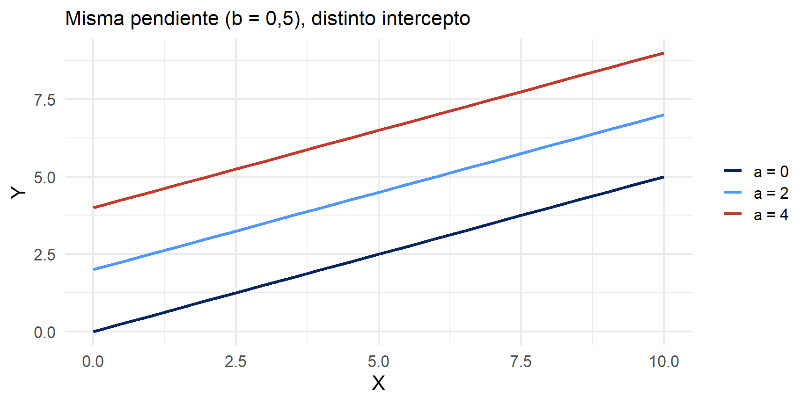

Métodos estadísticos para
Kevin Carrasco
Sociología - UNAB
2do Sem 2026
https://metod3-unab.netlify.app/
Sesión 2
Repaso y descripción de datos
Estadística multivariada
Estimación de la recta de regresión
¿Dónde quedamos?
La investigación cuantitativa requiere operacionalizar conceptos para hacerlos medibles
Los datos se organizan en casos (filas) y variables (columnas), con distintas escalas de medición
La correlación resume la fuerza y dirección de una relación lineal, pero no permite predecir ni distinguir entre variable dependiente e independiente
La regresión describe esa relación mediante una función: \(Y_i = \beta_0 + \beta_1 X_i + \epsilon_i\)
Hoy
Antes de explicar, necesitamos describir: medidas de tendencia central y de dispersión
¿Por qué la varianza es la pieza central del modelo de regresión?
¿Cómo se estiman concretamente \(b_0\) y \(b_1\)?
Antes de explicar: describir
Tipos de datos y escalas de medición
Datos categóricos:
- Pueden ser medidos sólo mediante escalas nominales, u ordinales en caso de orden de rango
Datos continuos:
- Medidos en escalas intervalares o de razón
- Pueden ser transformados a datos categóricos (ej: estatura en centímetros a categorías bajo, mediano y alto)
Descriptivos según tipo de variable
| Categórica | Continua | Categ.(y)/Categ.(x) | Cont.(y)/Categ.(x) | |
|---|---|---|---|---|
| Ejemplo | Estatus ocupacional | Ingreso | Estatus ocupacional (Y) / Género (X) | Ingreso (Y) / Género (X) |
| Tabla | Frecuencias / porcentajes | \(\bar{X}\) / sd, o recodificar en categorías | Tabla de contingencia | Clasificar Y |
| Gráfico | Barras | Histograma / boxplot | Gráfico de barras condicionado | Histograma o boxplot condicionado |
Tipos de análisis estadístico bivariado
Variable dependiente (y): lo que quiero explicar
Variable independiente (x): lo que me permite explicar la dependiente
| Variable independiente (x) | Variable dependiente categórica | Variable dependiente continua |
|---|---|---|
| Categórica | Análisis de tabla de contingencia, Chi2 | Análisis de varianza (ANOVA), prueba t |
| Continua | Regresión logística | Correlación / regresión lineal |
Tendencia central
Moda: valor que ocurre más frecuentemente
Mediana: valor medio de la distribución ordenada. Si N es par, es el promedio de los dos valores medios
Media o promedio aritmético: suma de los valores dividida por el total de casos
\[\bar{X} = \frac{\sum_{i=1}^{n} x_i}{n}\]
Dispersión: varianza
La media no basta

Dispersión: varianza
La media no basta

Dispersión: varianza
La media no basta

Dispersión: varianza

La varianza equivale al promedio de la suma de las diferencias respecto del promedio, elevadas al cuadrado
Desviación estándar

Raíz cuadrada de la varianza
Se expresa en las mismas unidades que los puntajes de la escala original
¿Por qué importa la varianza?
Sin variación no hay nada que explicar: si todas las personas tuvieran el mismo ingreso, no tendría sentido preguntarse qué lo determina
El modelo de regresión trabaja precisamente sobre la variación de la variable dependiente
Como veremos, el coeficiente de regresión se construye a partir de la varianza de \(X\) y de su covariación con \(Y\)
Más sobre datos, variables y varianza en:
Moore: 1. Comprensión de los datos (pp. 1-54)
Estadística multivariada
Estadística multivariada
- Hacia la explicación de los fenómenos sociales
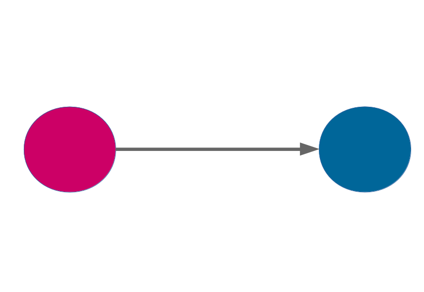
Estadística multivariada
- Hechos sociales: multicausales
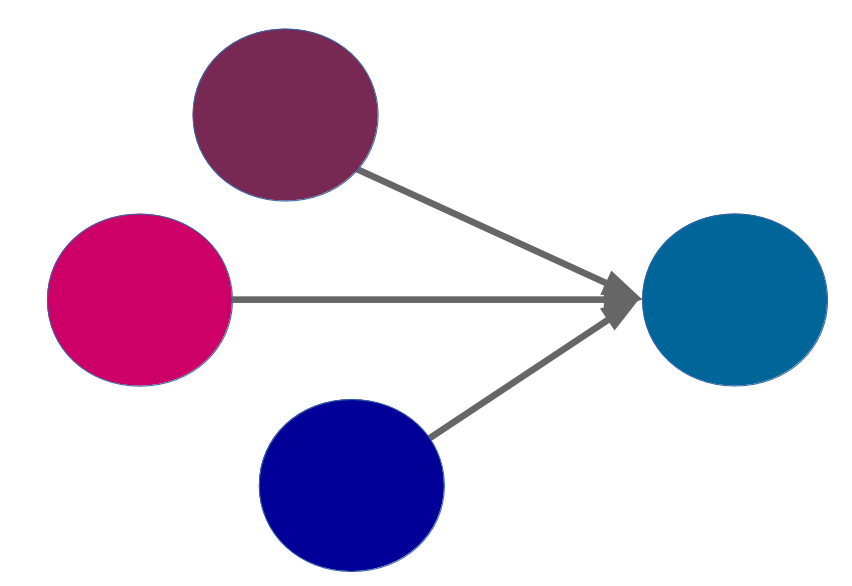
Estadística multivariada
- Intentando dar cuenta de la complejidad: modelos matemáticos
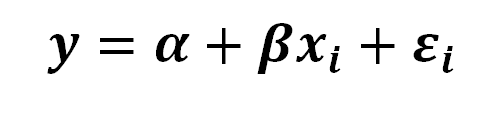
- A partir de un modelo matemático denominado regresión, este curso busca entregar herramientas de análisis de datos que permitan aproximarse a la explicación de fenómenos sociales multicausales
Objetivos centrales del modelo de regresión
Conocer: la variación de la variable dependiente de acuerdo a la variación de otra(s) variable(s) independiente(s)
Predecir: estimar el valor de una variable (dependiente) de acuerdo al valor de otra(s)
Inferir: establecer en qué medida esta asociación es estadísticamente significativa
Objetivos centrales: un ejemplo
Conocer: ¿en qué medida el puntaje de la PAES influye en el éxito académico en la universidad?
Predecir: si una persona obtiene 600 puntos en la PAES, ¿qué promedio de notas es probable que obtenga en la universidad? (atención: predicción no implica explicación)
Inferir: ¿se puede generalizar a la población? ¿Con qué nivel de confianza?
Terminología de variables
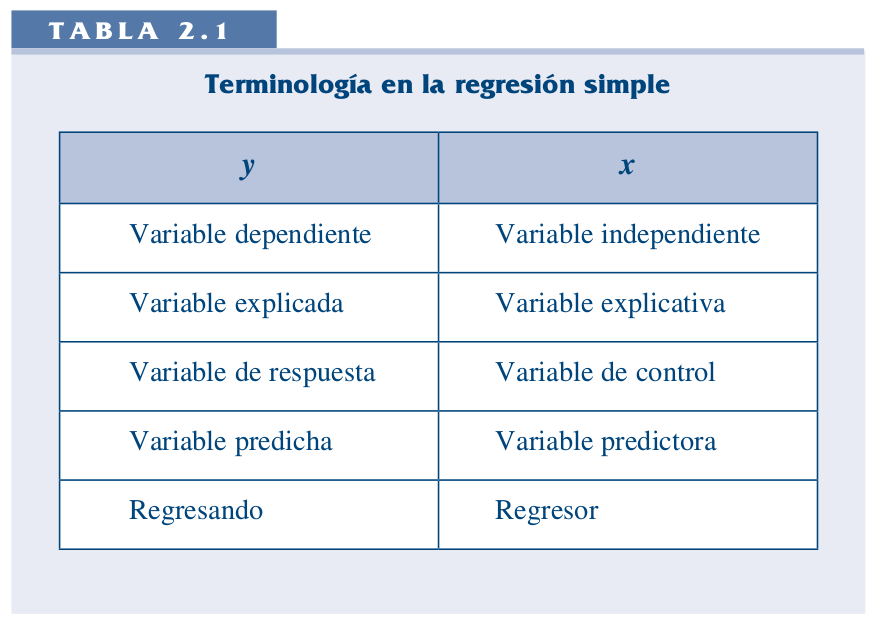
Repaso: la función lineal
La recta como función
\[Y = a + bX\]
Una función asigna a cada valor de \(X\) un único valor de \(Y\)
\(a\): valor de \(Y\) cuando \(X = 0\) (intercepto u ordenada en el origen)
\(b\): cuánto cambia \(Y\) cuando \(X\) aumenta en una unidad (pendiente)
En regresión escribimos \(\widehat{Y} = b_0 + b_1X\), pero la lógica es exactamente la misma
El intercepto desplaza la recta
La pendiente inclina la recta
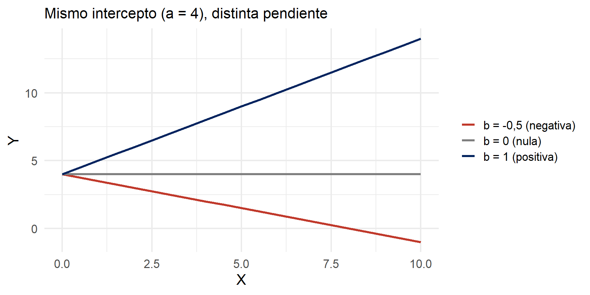
De las medias condicionales a la recta
Un ejemplo
¿En qué medida la experiencia previa jugando un juego predice el número de puntos obtenidos en un juego posterior?
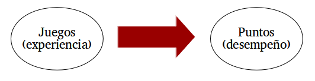
Los datos
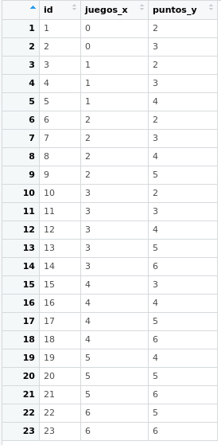
- \(X\): número de juegos previos
- \(Y\): puntos obtenidos
- 23 casos
Ver los datos
datos <- data.frame(
juegos_x = c(rep(1, 8), rep(2, 2), rep(3, 3), rep(4, 2), rep(5, 8)),
puntos_y = c(2, 2, 3, 3, 3, 3, 4, 4,
3, 4,
3, 4, 5,
4, 5,
4, 4, 5, 5, 5, 5, 6, 6)
)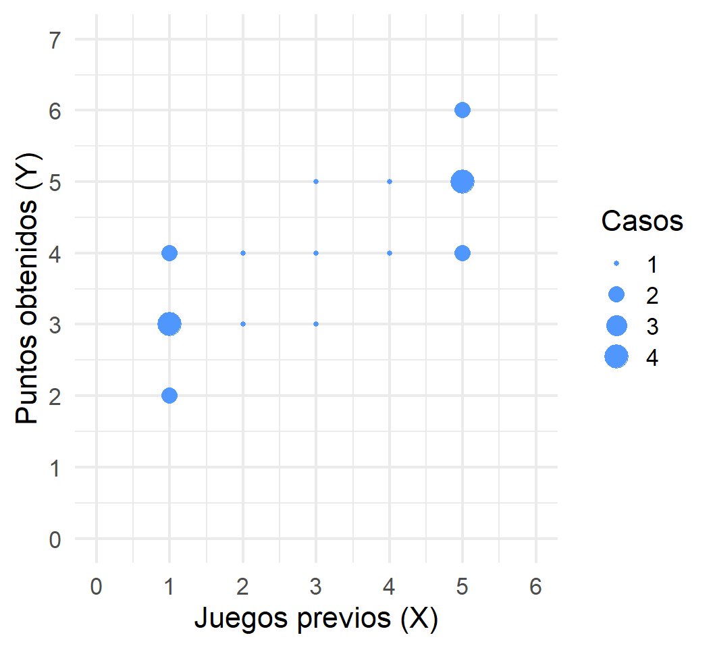
Descriptivos
descriptivos <- data.frame(
Variable = c("Juegos previos (X)", "Puntos obtenidos (Y)"),
N = c(nrow(datos), nrow(datos)),
Media = c(mean(datos$juegos_x), mean(datos$puntos_y)),
DE = c(sd(datos$juegos_x), sd(datos$puntos_y)),
Min = c(min(datos$juegos_x), min(datos$puntos_y)),
Max = c(max(datos$juegos_x), max(datos$puntos_y))
)| Variable | N | Media | DE | Min | Max |
|---|---|---|---|---|---|
| Juegos previos (X) | 23 | 3 | 1.76 | 1 | 5 |
| Puntos obtenidos (Y) | 23 | 4 | 1.13 | 2 | 6 |
Medias condicionales
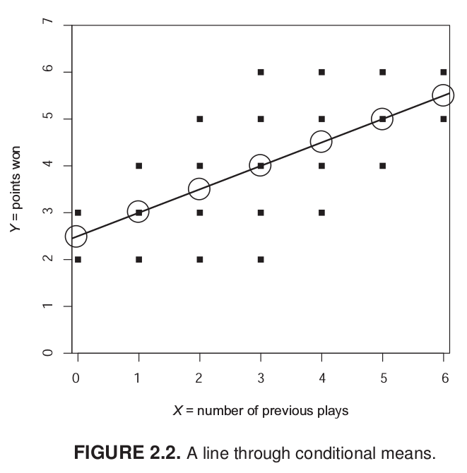
Para los casos con \(X = 1\) hay tres valores distintos de \(Y\): 2, 3 y 4. La media condicional de \(Y\) dado \(X = 1\) es 3
La idea de distribución condicional
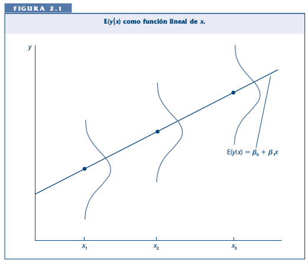
La recta de regresión
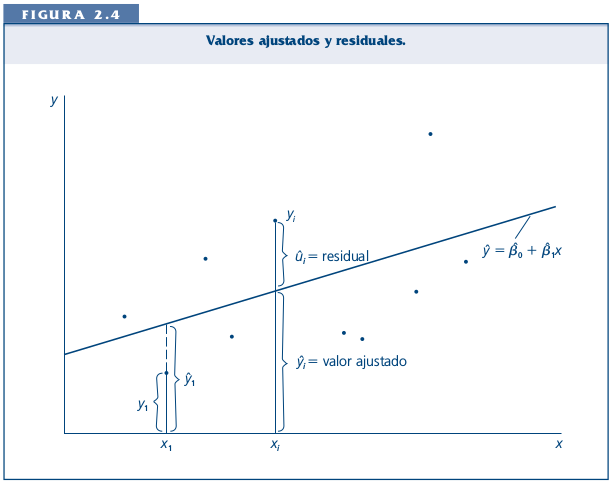
La (co)variación general de \(Y\) respecto de \(X\) se puede expresar en una ecuación de la recta = modelo de regresión
Para obtener la “mejor recta” se utiliza la estimación de mínimos cuadrados (OLS, Ordinary Least Squares)
OLS minimiza la suma de los residuos al cuadrado, es decir, las distancias entre las observaciones y la recta en el eje vertical
Estimación de los coeficientes
Componentes de la ecuación
\[\widehat{Y} = b_{0} + b_{1}X\]
Donde:
\(\widehat{Y}\) es el valor estimado de \(Y\)
\(b_{0}\) es el intercepto de la recta (el valor de \(Y\) cuando \(X\) es 0)
\(b_{1}\) es el coeficiente de regresión, que indica cuánto aumenta \(Y\) por cada unidad que aumenta \(X\)
Estimación de \(b_1\)
\[b_{1}=\frac{Cov(XY)}{Var(X)}\]
\[b_{1}=\frac{\frac{\sum_{i=1}^{n}(x_i - \bar{x})(y_i - \bar{y})} {n-1}}{\frac{\sum_{i=1}^{n}(x_i - \bar{x})(x_i - \bar{x})} {n-1}}\]
Y simplificando:
\[b_{1}=\frac{\sum_{i=1}^{n}(x_i - \bar{x})(y_i - \bar{y})} {\sum_{i=1}^{n}(x_i - \bar{x})^2}\]
Estimación de \(b_0\)
Una vez estimada la pendiente, se despeja el intercepto:
\[b_{0}=\bar{Y}-b_{1}\bar{X}\]
Esto implica que la recta de regresión siempre pasa por el punto \((\bar{X}, \bar{Y})\)
Cálculo paso a paso
La base de todos estos cálculos es la diferencia de cada valor respecto de su promedio:
\[difx = x-\bar{x} \qquad dify = y-\bar{y}\]
Con ellas construimos los productos cruzados y las diferencias al cuadrado:
\[difcru = (x-\bar{x})(y-\bar{y}) \qquad difx2 = (x-\bar{x})^2\]
Cálculo paso a paso en R
Cálculo paso a paso
| juegos_x | puntos_y | difx | dify | dif_cru | difx2 |
|---|---|---|---|---|---|
| 1 | 2 | -2 | -2 | 4 | 4 |
| 1 | 2 | -2 | -2 | 4 | 4 |
| 1 | 3 | -2 | -1 | 2 | 4 |
| 1 | 3 | -2 | -1 | 2 | 4 |
| 1 | 3 | -2 | -1 | 2 | 4 |
| 1 | 3 | -2 | -1 | 2 | 4 |
| 1 | 4 | -2 | 0 | 0 | 4 |
| 1 | 4 | -2 | 0 | 0 | 4 |
| 2 | 3 | -1 | -1 | 1 | 1 |
| 2 | 4 | -1 | 0 | 0 | 1 |
Primeros 10 casos de 23
Las sumas que necesitamos
sum(datos$dif_cru)
#> [1] 34
sum(datos$difx2)
#> [1] 68Reemplazando en la fórmula
\[b_{1}=\frac{\sum_{i=1}^{n}(x_i - \bar{x})(y_i - \bar{y})} {\sum_{i=1}^{n}(x_i - \bar{x})^2}=\frac{34}{68}=0.5\]
Y con la pendiente ya estimada:
\[b_{0}=\bar{Y}-b_{1}\bar{X} = 4-(0.5 \times 3)=2.5\]
La ecuación completa
\[\widehat{Y}=2.5+0.5X\]
Intercepto: una persona sin juegos previos obtiene, en promedio, 2,5 puntos
Pendiente: por cada juego previo adicional, los puntos obtenidos aumentan en 0,5
Predicción
\[\widehat{Y}=2.5+0.5X\]
La ecuación permite estimar el valor de \(Y\) (o su media condicional) para un valor dado de \(X\). Por ejemplo, ¿cuál es el valor estimado de \(Y\) dado \(X=3\)?
\[\widehat{Y}=2.5+(0.5 \times 3)=4\]
El valor estimado de puntos para una persona que ha jugado 3 veces es 4
Comprobación en R
modelo <- lm(puntos_y ~ juegos_x, data = datos)
coef(modelo)
#> (Intercept) juegos_x
#> 2.5 0.5Los mismos valores que calculamos a mano
El resultado
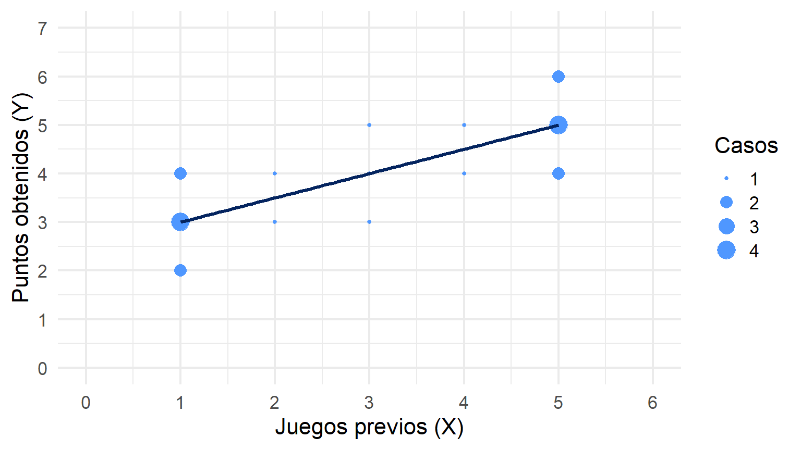
En resumen: ¿qué gano con el modelo de regresión?
Al igual que con la correlación:
- Intensidad de la relación entre variables
- Dirección de la relación
Y además:
- Predicción del puntaje real de la variable dependiente
- Estimación del ajuste o cantidad de error en la estimación (próxima clase)
- Posibilidad de incluir más de una variable predictora (en dos clases más)
Para la próxima sesión
Wooldridge, Introducción a la econometría: apéndices A1 y A2, y sección 2.1
Moore, Estadística aplicada básica: sección 2.4.1